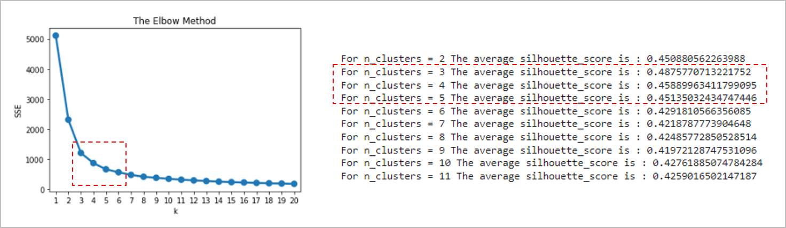
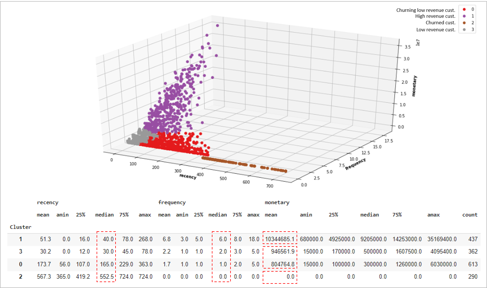
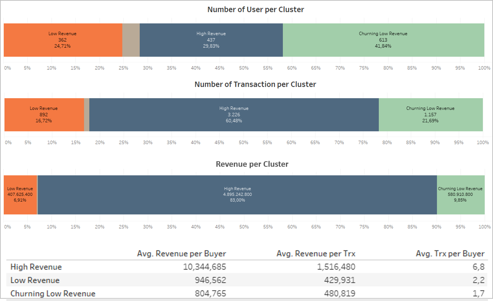
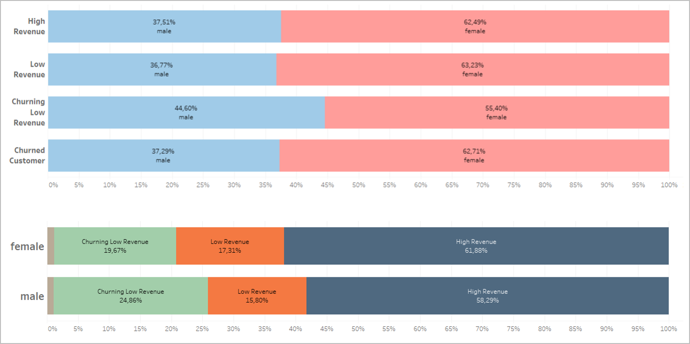
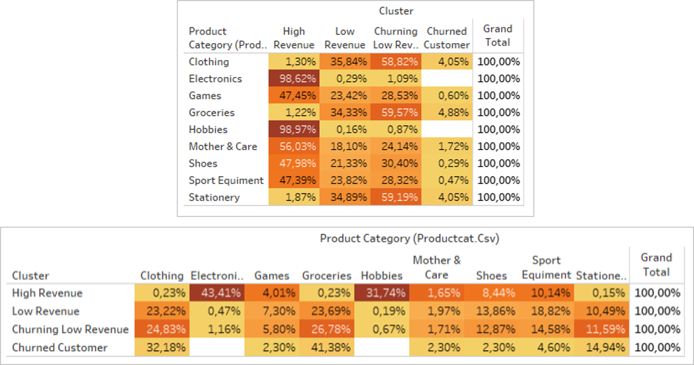
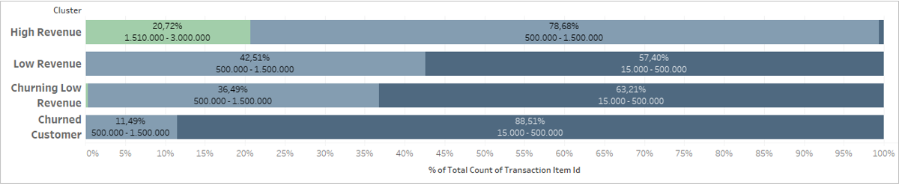
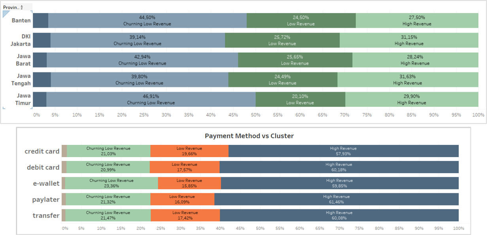

E-commerceU Marketing Strategy Based On Customer Segmentation
About the project
The Expert acknowledged that currently the marketing strategy used by EcommerceU Company does not target a specific market or differentiate approaches for different market segments. Therefore, I am as Data Analyst Associate (DAA) is expected to be able to provide recommendation support for the development of segmented marketing strategies using Customer Segmentation Analysis.
As with the problems faced by EcommerceU, there is a sharp decrease in revenue generated by the eCommerceU throughout the year of 2021 compared to the previous year, this segmentation is expected to provide recommendations to overcome these problems.
Method
To do customer segmentation in EcommerceU, we use the RFM method. RFM stands for recency, frequency, monetary value. In business analytics, we often use this concept to divide customers into different segments, like high-value customers, medium value customers or low-value customers, and similarly many others.
RFM analysis helps the company to identify their loyal & profitable customers. In addition this analysis will show which customers are likely to be more loyal in the future and who are likely to lapse. And with a strong correlation with ecommerce, RFM itself is a great analysis to do in a dataset like this.
Why RFM?
- Effective in predicting future customer behavior and increasing revenue.
- Who have made a purchase in the recent past are more likely to do so in the near future.
- Who interact with your brand more frequently are more likely to do so again soon.
- Who have spent the most are more likely to be big spenders going forward.
Just to give you some context, here are the definitions we use for recency, frequency and monetary.
- Difference between max dataset completed transaction date (today's date replacement) and last user completed transaction date
- The number of completed transaction in the period of one year (2021)
- The total amount spent of completed transaction in the period of one year (2021)
Segmentation Results
You can see the python code here.
1. Based on the silhouette and elbow method, 3 to 5 clusters is the best number of clusters
To determine the number of clusters, we first use the elbow and silhouette methods. We found that the best number of clusters is 3, 4, or 5 clusters. And then we will look at the statistical summary and from the business side of each cluster to determine the best number of clusters.
2. 4 Segments
We divide the segment into 4 clusters using K-means method and statistical summary after doing a series of experiments on the other number of clusters as well, that is:
- high revenue customers (1)
- low revenue customers (3)
- churning low revenue customers (0)
- churned customers (2)
The reason behind the selection of these 4 clusters is because of the clarity of the distribution of characteristics of each segment. First, on the monetary variable, we can divide the segment into 3 levels, namely customers with high revenue, low revenue, and no revenue at all. It's just that for low revenue, we can still divide it again based on the recency, so that we can distinguish which ones have just transacted and which ones have started churning. In terms of frequency, the division is the same as monetary, for high monetary it is paired with high frequency and so on. Because of this clarity, finally 4 clusters were chosen.
Insights and Recommendations
1. Double down on high revenue customer
Although the number of high revenue customers is not the largest, they contribute the largest number of transactions and revenue.
Low revenue customers (whether churning or not), characteristically, differ greatly from high revenue customers.
And as we know from the data, the number of transactions and revenue from high revenue customers is very high. So if we want to increase revenue, we can double down on high revenue customers.
2. Marketing concept that tends to target female users
Mostly dominated by female gender on all across the segmentation, with this information we can either focus on selling feminime based products or try to increase masculine based products.
3. Target user with interest in electronics & hobbies
75% of the products purchased by high revenue customers are electronics and hobbies categories. And 98% of the contributors for electronic goods and hobbies are high revenue customers.
So, to increase revenue we can focus on the category of electronics & hobbies to increase the number of high revenue customers and their transactions and revenue
4. Formulate Product Bundling Combination
We can target users in each cluster who are currently in a low price range in their cluster to be upgraded to a higher price range, by offering product bundling or by providing product promotions with a price range above their current price range. For example, for low revenue customers, we can make bundling for grocery products that tend to have low prices and are usually purchased in large quantities and many times.
5. Cluster vs Province & Payment Method
The distribution of all clusters in each province and the use of the payment method are similar. So there is no problem using similar marketing techniques from the provincial side and the payment method.
General Recommendations
- First priority is to focus on high revenue female customers and electronics-hobbies category to increase revenue.
- Second, formulate product bundling to increase revenue from low revenue customers.
- Third, conducting user interviews with high revenue and low revenue customers to find out what makes them churn and what makes them want to keep transacting.
Main Characteristics of Each Clusters
- Churning Low Revenue Customer
- Mostly buys on Clothing & Groceries category
- Mostly buy on mid to low price ranges
- The main attributes: low monetary value (mean: 804k), haven't transacted recently (median: 165 days), low frequency (median: 1 trx)
- High Revenue Customer
- Mostly dabble on Electronics & Hobbies category
- Mostly buy on higher to mid price ranges
- The main attributes: high monetary value (mean: 804k), transacted recently (median: 40 days), high frequency (median: 6 trx)
- Low Revenue Customer
- Mostly buys on Clothing & Groceries category
- Mostly buy on mid to low price ranges
- The main attributes: low monetary value (mean: 946k), transacted recently (median: 30 days), low frequency (median: 2 trx)
- Churned Customer
- Mostly buys on Clothing & Groceries category
- Mostly buy on mid to low price ranges
- The main attributes: no monetary value, haven't transacted for long time (median: 552 days), no frequency
Recommendations for Each Clusters
- High Revenue Customer
- Focus on expanding and improving the the most selling category from this cluster (technology & hobbies).
- Maintain and grow cluster by attracting more user that fits the cluster profile through digital presence and reactivation with campaign and email.
- Low Revenue Customer
- Try to improve customer’s buying frequency to at least match high revenue cluster.
- Expand the cluster by converting Churning Low Revenue into this cluster.
- Make use of Bundling because the top category for this cluster are Groceries & Clothing.
- Churning Low Revenue Customer
- Utilize Promos/Loyalty programs to encourage user reactivation.
- Create a survey (with vouchers/discounts) to gain feedback on why they churned.
- Churned Customer
- Reactivate Customers by using emails “We’ve Missed You, here are products based on your preference” with added incentives.
- Call a sample size of customers that have spent a lot but have now churned